Back to basics
Environnement de développement
Bien choisir ses outils


Node & npm
node -vnpm -vangular-cli
npm install -g @angular/cling -v
Chrome
Mais testez sur Firefox !
et IE...
VSCode
DownloadGit integration
Raccourcis utiles
Extensions
- eslint
- tslint
Packaging
Packaging ?
TODO: le packaging est bon pour les développeurs mais pas pour les utilisateurs
"Old School" Packaging


Taskrunners
"Old School" Packaging
- Optimisations difficiles
- Pas conscient des dépendences
- Beaucoup de code pour peu de choses...

Webpack
Welcome module bundlers!
Webpack

Installation de webpack
npm init -ynpm install --save-dev webpack webpack-cliHello, Webpack!
// src/index.js
console.log('Hello, Webpack!');npm run build
"scripts": {
"build": "webpack"
...
}webpack.config.js
module.exports = {
mode: process.env.NODE_ENV ? process.env.NODE_ENV : 'development',
};Installation de webpack-dev-server
npm install --save-dev webpack-dev-servernpm start
"scripts": {
"start": "webpack-dev-server",
...
}Installation de html-webpack-plugin
npm install --save-dev html-webpack-plugin@webpack-contrib/html-webpack-pluginwebpack.config.js
const HtmlWebpackPlugin = require('html-webpack-plugin');
module.exports = {
...
plugins: [new HtmlWebpackPlugin({
template: 'src/index.html',
})]
};Modules - Default export
// src/hello.js
export default 'Hello, Webpack!';// src/index.js
import hello from './hello';
console.log(hello);Modules - Named export
// src/mylib.js
export function add(a, b) {
return a + b;
}// src/index.js
import { add } from './mylib';
console.log(add(19, 23));Ajout d'un type de fichier
Le JavaScript est géré par défaut par webpack
import './style.css';Il faut ajouter des Loaders pour gérer les autres types de fichiers
Ajout de règles de chargement
npm install --save-dev style-loader css-loadermodule.exports = {
...
module: {
rules: [
{ test: /\.css$/, use: ['style-loader', 'css-loader'] },
]
},
...
};Un peu d'exercice !

Ajouter
file-loader pour charger des images
Debugging
module.exports = {
devtool: 'source-map',
...
};ECMAScript
ECMAScript
ECMAScript est la norme du JavaScript
Évolution rapide depuis quelques années :
- classes
- isolation de scope
- shorthands
- modules
- tableaux typés
- web components
- ...
Pas entièrement supporté par tous les navigateurs :(

Compilateur JavaScript pour utiliser tous les standards ECMAScript!
Installation de babel
npm install --save-dev babel-loader babel-core babel-preset-env{
"presets": ["env"]
}module.exports = {
...
{ test: /\.js$/, exclude: /node_modules/, use: 'babel-loader' },
...
};Sélection des navigateurs ciblés
{
"presets": [
["env", {
"targets": ["last 2 versions", "not ie <= 10"]
}]
]
}TypeScript
npm install --save-dev typescript ts-loader{
"compilerOptions": {
"outDir": "./dist/",
"sourceMap": true,
"noImplicitAny": true,
"module": "es6",
"target": "es5",
"jsx": "react",
"allowJs": true
}
}